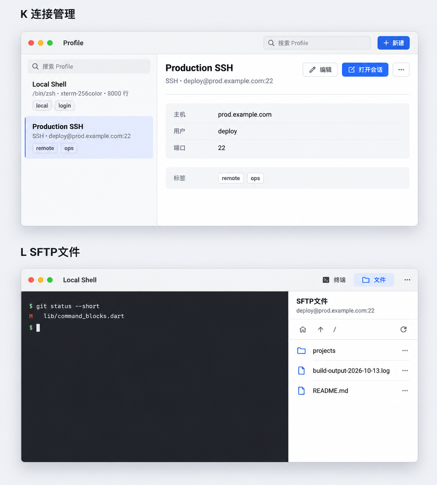

<!doctype html><html lang="zh-CN"><meta charset="utf-8"><meta name="viewport" content="width=device-width,initial-scale=1"><title>macOS · 连接管理 / 文件面板</title><style>*{box-sizing:border-box}body{margin:0;background:#f3f4f7;color:#172235;font:15px -apple-system,BlinkMacSystemFont,sans-serif}main{max-width:1280px;margin:auto;padding:28px}h1{font-size:29px;letter-spacing:-.6px;margin:0 0 12px}h2{font-size:22px;margin-top:28px}p{color:#526075;line-height:1.65}nav{display:flex;gap:8px;flex-wrap:wrap;margin:20px 0}a{color:#235bc4}nav a,button{background:#fff;border:1px solid #cfd6e1;border-radius:9px;padding:10px 14px;text-decoration:none;color:#235bc4;cursor:pointer}figure{margin:0}.shot{position:relative}.shot img{width:100%;display:block}.before{display:flex;gap:16px;justify-content:center}.before figure{flex:1;min-width:0}.before img{width:100%;display:block}.before figcaption{padding:8px;font-weight:600}.box{position:absolute;border:2px solid #bd4b15;border-radius:6px}.box b{position:absolute;left:-14px;top:-14px;width:28px;height:28px;border-radius:50%;background:#b8450e;color:white;border:2px solid white;text-align:center;line-height:24px;font-size:13px}.notes{display:grid;grid-template-columns:repeat(3,1fr);gap:12px;margin-top:16px}.notes div{background:white;padding:16px;line-height:1.6;border-left:3px solid #bd4b15}table{border-collapse:collapse;width:100%;font-size:14px;background:white}th,td{padding:14px;text-align:left;vertical-align:top;border-bottom:1px solid #e0e4ec;line-height:1.6}th{background:#e9edf4}td:first-child{font-weight:600;min-width:140px}.notice{border-left:4px solid #235bc4;background:#eaf0fc;padding:14px 18px;line-height:1.6}.warn{background:#fff6e7;border-left:4px solid #bc7420;padding:14px;margin:16px 0;line-height:1.6}details{margin:20px 0}summary{font-weight:600;cursor:pointer;padding:12px 0}footer{margin:28px 0;color:#627086;font-size:13px;line-height:1.6}.cards{display:grid;grid-template-columns:repeat(2,1fr);gap:16px}.cards a{padding:22px;background:white;border-radius:16px;text-decoration:none}.cards strong{display:block;font-size:20px;margin-bottom:10px}.hero{max-height:600px;object-fit:contain;width:100%;background:#e8edf4}@media(max-width:800px){main{padding:16px}.notes,.cards{grid-template-columns:1fr}table{display:block;overflow:auto}.before{gap:6px}}@media print{nav,button{display:none}}</style><main><h1>macOS · 连接管理 / 文件面板</h1><nav><a href="index.html">总览</a><a href="history.html">历史</a><a href="ios-core.html">iOS 核心</a><a href="ios-support.html">iOS 其他</a><a href="mac-core.html">Mac 核心</a><a href="mac-support.html">Mac 其他</a><a href="states.html">深色与状态</a><a href="tokens.html">完整标注规范</a></nav><div class="notice">当前组件截图 → 新方向概念图。点击图片查看原尺寸；橙色标注包含设计调整和图稿待修正点。</div><details open id="current"><summary>修改前 · 当前界面</summary><div class="before"><figure><a href="assets/macOS-light-portrait-shell-profiles.png"></a><figcaption>K · 连接管理</figcaption></figure><figure><a href="assets/macOS-light-portrait-sftp.png"></a><figcaption>L · 文件夹具</figcaption></figure></div></details><h2>设计方案 · 编号标注</h2><button onclick="document.querySelectorAll('.box').forEach(e=>e.hidden=!e.hidden)">显示 / 隐藏标注</button><p>数字与参数以本页规范为准，概念像素不作为精确测量依据。</p><div class="shot"><a href="assets/mac-support.png"></a><div class="box" style="left:5%;top:11%;width:31%;height:34%"><b>K1</b></div><div class="box" style="left:36%;top:11%;width:59%;height:29%"><b>K2</b></div><div class="box" style="left:66%;top:60%;width:29%;height:35%"><b>L</b></div></div><div class="notes"><div><strong>K1</strong><br>列表260–300；搜索只保留左侧这一处，删除图稿右上重复搜索。</div><div><strong>K2</strong><br>详情与打开动作分开；选中态用系统反馈，去掉图稿左蓝竖线装饰。</div><div><strong>L</strong><br>文件面板建议320–440可调；保留终端上下文和关闭入口。</div></div><div class="warn">需按标注修正图稿：K 的搜索只保留左侧一处，选中不加蓝竖线；L 必须保留关闭侧栏按钮。当前 SFTP 图是全宽测试夹具，不代表生产界面一直全宽。</div><h2>精确设计目标与行为保留</h2><table><thead><tr><th>场景</th><th>当前问题</th><th>拟调整</th><th>目标参数</th><th>必须保留</th></tr></thead><tbody><tr><td>K · macOS连接管理</td><td>桌面沿用手机底部sheet</td><td>标准桌面窗口/面板；列表和详情并列</td><td>列表260–300；行48–56；最窄时详情纵向；窗口可缩放</td><td>保留已有标签搜索、编辑、删除；点击选择与打开分离；双击/Enter打开需实现验证</td></tr><tr><td>L · macOS文件</td><td>夹具全宽展示，实际面板边界未体现</td><td>作为终端旁侧面板呈现；路径操作与列表统一</td><td>面板建议320–440可调整；文件行28–32</td><td>原截图全宽来自测试容器，不据此断言生产全宽；关闭面板保留终端</td></tr></tbody></table><footer>2026-11-01 · 视觉设计评审稿，非已实现界面。当前图来自真实 Flutter 组件测试夹具，方案图为 Image Gen 概念稿；编号和参数为设计标注，不是已测量值。<br>实际功能、文案与安全守卫以规范表为准；后续只用模拟器验证，不操作手机。</footer></main></html>